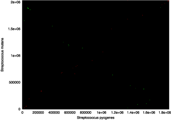
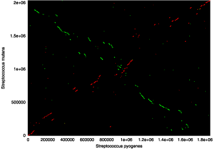
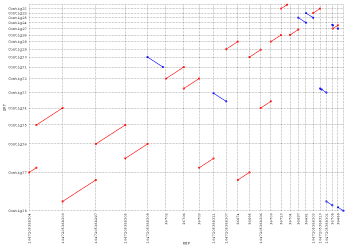
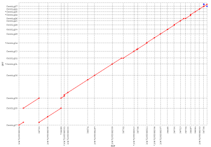

MUMmer is an open source software package for the rapid alignment of very large DNA and amino acid sequences. The latest version, release 3.0, includes a new suffix tree algorithm that has further improved the efficiency of the package and has been integral to making MUMmer an open source product. If you are familiar with the previous versions of MUMmer, you will find the new version is very similar because most of the changes have been to the implementation and not the interface, however this document assumes no previous experience with MUMmer, so past users may find it desirable to skip or skim through some of the sections.
MUMmer is a modular and versatile package that relies on a suffix tree data
structure for efficient pattern matching. Suffix trees are suited for large
data sets because they can be constructed and searched in linear time and space.
This allows mummer to find all 20 base pair maximal exact matches
between two ~5 million base pair bacterial genomes in 20 seconds, using 90 MB
of RAM, on a typical 1.7 GHz Linux desktop computer. Using a seed and extend
strategy, other parts of the MUMmer pipeline use these exact matches as alignment
anchors to generate pair-wise alignments similar to BLAST output. Also included
are some utilities to handle the alignment output and
a primitive plotting tool (mummerplot) that allows the user to
convert MUMmer output to gnuplot
files for dot and percent identity plots. Another graphical
utility called MapView is included with the MUMmer distribution and displays
sequence alignments to a annotated reference sequence for exon refinement and
investigation.
This modular design has an important side effect, it allows for the easy reuse of MUMmer modules in other software. For instance, one can imagine primer design, repeat masking and even comparative annotation tools based on the efficient matching algorithm MUMmer provides. Another advantage of MUMmer is its speed. Its low runtime and memory requirements allow it to be used on most any computer. MUMmer's efficiency also makes it ideal for aligning huge sequences such as completed and draft eukarotic genomes. MUMmer has been successfully used to align the mouse and human genomes, showing it can handle most any input available. In addition, its ability to handle multiple sequences facilitate many vs. many searches, and make the comparison of unfinished draft sequence quite simple. However, because of it's many abilities, inexperienced users may find it difficult to determine the best methods for their application, so please refer to the Running MUMmer and Use cases sections for brief descriptions, use case examples, and tips on making the most of the MUMmer package, or if you want to understand more about a specific utility, refer to Program descriptions section for more detailed information and output formats.
The MUMmer package provides efficient means for comparing an entire genome against another. However, until 1999 there were no two genomes of sufficient similarity to compare. With the publication of the second strain of Helicobacter pylori in 1999, following the publication of the first strain in 1997, the scientific world had its first chance to look at two complete bacterial genomes whose DNA sequences were highly similar. The number of pairs of closely-related genomes has exploded in recent years, facilitating many comparative studies. For instance, the published databases include the following genomes for which multiple strains and/or multiple species have been sequenced:
multiple strains of...
|
multiple species of...
|
Most of these genomes can be obtained from the NCBI ftp site: ftp://ftp.ncbi.nlm.nih.gov/genomes/
With the capability to align the entire human genome to itself, there is no genome too large for MUMmer. The following table gives run times and space requirements for a cross comparison of all human chromosomes. The 1st column indicates the chromosome number, with "Un" referring to unmapped contigs. Column 2 shows chromosome length and column 4 shows the length of the total genomic DNA searched against the chromosome in column 1. Column 3 shows the time to construct the suffix tree, and column 5 the time to stream the query sequence through it. Column 6 shows the maximum amount of computer memory occupied by the program and data, and column 7 shows memory usage for the suffix tree in bytes per base pair. Each human chromosome was used as a reference, and the rest of the genome was used as a query and streamed against it. To avoid duplication, we only included chromosomes in the query if they had not already been compared; thus we first used chromosome 1 as a reference, and streamed the other 23 chromosomes against it. Then we used chromosome 2 as a reference, and streamed chromosomes 3–22, X, and Y against that, and so on.
| Chr | Ref length (Mbp) |
Suffix time (min) |
Qry length (Mbp) |
Query time (min) |
Total space (Mb) |
Suffix space (bytes/bp) |
| 1 | 221.8 | 24.6 | 2617.1 | 679.5 | 3702 | 15.43 |
| 2 | 237.6 | 27.4 | 2379.5 | 625.8 | 3908 | 15.43 |
| 3 | 194.8 | 21.2 | 2184.7 | 565.0 | 3232 | 15.43 |
| 4 | 188.4 | 22.4 | 1996.3 | 518.0 | 3121 | 15.43 |
| 5 | 177.7 | 18.6 | 1818.6 | 461.4 | 2952 | 15.43 |
| 6 | 175.8 | 17.9 | 1642.8 | 407.6 | 2900 | 15.43 |
| 7 | 153.8 | 15.7 | 1489.0 | 360.1 | 2550 | 15.43 |
| 8 | 142.8 | 14.4 | 1346.2 | 322.3 | 2378 | 15.43 |
| 9 | 117.0 | 10.7 | 1229.2 | 303.7 | 1974 | 15.43 |
| 10 | 131.1 | 13.2 | 1098.1 | 263.3 | 2195 | 15.43 |
| 11 | 133.2 | 13.1 | 964.9 | 225.6 | 2228 | 15.43 |
| 12 | 129.4 | 12.5 | 835.5 | 195.9 | 2168 | 15.43 |
| 13 | 95.2 | 8.6 | 740.3 | 163.6 | 1633 | 15.44 |
| 14 | 88.2 | 7.5 | 652.1 | 141.0 | 1523 | 15.44 |
| 15 | 83.6 | 6.8 | 568.5 | 122.1 | 1451 | 15.44 |
| 16 | 80.9 | 6.4 | 487.6 | 106.3 | 1409 | 15.44 |
| 17 | 80.7 | 6.6 | 406.9 | 91.8 | 1406 | 15.44 |
| 18 | 74.6 | 6.3 | 332.3 | 78.8 | 1311 | 15.44 |
| 19 | 56.4 | 3.7 | 275.8 | 56.1 | 1026 | 15.45 |
| 20 | 59.4 | 4.6 | 216.4 | 45.8 | 1073 | 15.45 |
| 21 | 33.9 | 2.1 | 182.5 | 33.7 | 673 | 15.48 |
| 22 | 33.8 | 2.0 | 148.6 | 26.4 | 672 | 15.48 |
| Un | 1.4 | 0.03 | 147.3 | 10.0 | 164 | 16.96 |
| X | 147.3 | 14.6 | 4.8 | 2327 | 15.57 |
The Human Chromosomes can be obtained from the NCBI ftp site: ftp://ftp.ncbi.nih.gov/genomes/H_sapiens/
The key difference between version 3.0 and previous versions of MUMmer,
is its qualification as an open source project. Previous versions of MUMmer
were always free for non-profit, but now MUMmer is free for all organizations,
both for- and non-profit. Please refer to the To receive software update notices, please join the MUMmer mailing list. This list will only be used to announce major version releases and help us keep track of MUMmer users. |
MUMmer comes as a source distribution only, and needs to be compiled before
use. This sections describes the steps and requirements necessary to compile
the package. Installation problems are usually caused by incompatible versions
of one or more OS utilities, so if installation fails please check that you
have the needed system requirements before alerting us of your problem. The
INSTALL file included in the source distribution also contains
much of the same information provided in this section.
MUMmer is mostly written in C and C++. With some technical expertise it could be ported to any system with a C++ compiler, but our distribution was specifically designed to be compiled with the GNU GCC compiler and has been successfully tested on the following three platforms:
Redhat Linux 6.2 and 7.3 (Pentium 4)Compaq Tru64 UNIX 5.1 (alpha)SunOS UNIX 5.8 (sparc)Mac OS X 10.2.8 (PowerPC G4)MUMmer also requires some third party software to run successfully. In the absence of one or more of the below utilities, certain MUMmer programs may fail to run correctly. Listed in parenthesis are the versions used to test the MUMmer package. These versions, or subsequent versions should assure the proper execution of the various MUMmer programs. These utilities must be accessible via the system path:
make (GNU make 3.79.1)perl (PERL 5.6.0)sh (GNU sh 1.14.7)csh (tcsh 6.10.00)g++ (GNU gcc 2.95.3)sed (GNU sed 3.02)awk (GNU awk 3.0.4)ar (GNU ar 2.9.5)For running the MUMmer display programs, these additional system utilities are required:
fig2dev (fig2dev 3.2.3)gnuplot (gnuplot 4.0)xfig (xfig 3.2)Sufficient memory and disk space are also necessary, but required sizes vary
considerably with input size, so please be aware of your disk and memory usage,
as insufficient capacities will result in incorrect or missing output. In general,
512 MB of RAM and 1 GB of disk space is sufficient for most mid-sized comparisons.
For Mac OSX, the Mac development kit must be downloaded and installed. This
kit will include gcc, ar, and make which
are necessary for building MUMmer. MUMmer is not supported for any Mac operating
system other than OSX.
The current MUMmer release can be downloaded from our SourceForge.net project page.
For explanation purposes, let's suppose you just downloaded the MUMmer3.0.tar.gz
distribution from the SourceForge site. The first step would be to move this
file to the desired installation directory and type:
tar -xvzf MUMmer3.0.tar.gz
to extract the MUMmer source into a MUMmer3.0 subdirectory. Switch
to this newly created subdirectory and execute:
make check
to assure the makefile can identify the necessary utilities. If no error messages
appear, the diagnostics were successful and you may continue. However, if error
messages are displayed, the listed programs are not accessible via your system
path. Install the utilities if necessary, add them to your system PATH
variable, and continue with the MUMmer installation by typing:
make install
This will attempt to compile the MUMmer scripts and executables. If the make
command issues no errors, the compilation was successful and you are ready to
begin using MUMmer. If the command fails, it is likely that make
was confused by the existence of more than one copy of the same utility, such
as two versions of gcc. When this happens, it is important to arrange
you system PATH variable so that the more recent versions are listed
first, or to hard code the location of your utility location in the makefile.
The same advice goes for your LD_LIBRARY_PATH variable if your system
is having a difficult time locating the appropriate C or C++ libraries at runtime.
It is important to note that the make command dynamically builds
the MUMmer scripts to reference the install directory, therefore if the install
directory is moved after the make command is issued the MUMmer
scripts will fail. If you need certain MUMmer executables in a directory other
than the install directory, it is recommend to leave the install directory untouched
and link the needed executables to the desired destination. An alternative would
be to move the install directory and reissue the make command at
the new location.
The five most commonly used programs in the MUMmer package are mummer,
nucmer, promer, run-mummer1 and run-mummer3,
so this section covers the basics of executing these tools and what each of
them specializes in. To better understand how to view the outputs of these programs,
please refer to the use cases section or the MUMmer
examples webpage for a brief walk-through of each major module with full
input data and expected outputs. For further information, please refer to the
Program descriptions section for a detailed explanation
of each program and its output.
mummer efficiently locates maximal unique matches between
two sequences using a suffix tree data structure. This makes mummer
most suited for generating lists of exact matches that can be displayed as a
dot plot, or used as anchors in generating pair-wise
alignments.
mummer [options] <reference file> <query file1> . . . [query
file32]
There must be exactly one reference file and at least one query file. Both
the reference and query files should be in multi-FastA format and may contain
any set of upper and lowercase characters, thus DNA and protein sequences are
both allowed and matching is case insensitive. The maximum number of query files
is 32, but there is no limit on how many sequences each reference or query file
may contain. Output is to stdout. Refer to the mummer
section for a list of options and output descriptions.
NUCmer is a Perl script pipeline for the alignment of multiple closely related nucleotide sequences. It begins by finding maximal exact matches of a given length, it then clusters these matches to form larger inexact alignment regions, and finally, it extends alignments outward from each of the matches to join the clusters into a single high scoring pair-wise alignment. This makes NUCmer most suited for locating and displaying highly conserved regions of DNA sequence. To increase NUCmer's accuracy, it may be desirable to mask the input sequences to avoid the alignment of uninteresting sequence, or to change the uniqueness constraints (see the NUCmer section) to reduce the number of repeat induced alignments.
nucmer [options] <reference file> <query file>
Both the reference and query files should be in multi-FastA format and may
contain any set of upper and lowercase characters, however only the
DNA characters a, c, t and g will be aligned
(case insensitive). There is no limit on how many sequences the reference or
query files may contain. Output is written to the file out.delta
This is an ASCII file, but not formatted for human
consumption, so it is necessary to run a utility program to parse the output.
The two primary utility programs for viewing the contents of a .delta
file are show-aligns, and show-coords. show-aligns
displays all of the pair-wise alignments between two sequences, while show-coords
displays a summary of the coordinates, percent identity, etc. of the alignment
regions. Refer to the NUCmer section for a list of options
and output descriptions.
PROmer is a Perl script pipeline for the alignment of multiple somewhat divergent nucleotide sequences. It works exactly like NUCmer, but with a small twist. Before any of the exact matching takes place, the input sequences are translated in all six amino acid reading frames. This allows PROmer to identify regions of conserved protein sequences that may not be conserved on the DNA level and thus gives it a higher sensitivity than NUCmer. Note however, this increase in sensitivity will result in huge amounts of output for highly similar sequences, therefore it is recommended that PROmer only be used when the input sequences are too divergent to produce a reasonable amount of NUCmer output. As with NUCmer, it is recommended to mask the input sequences to avoid the alignment of uninteresting sequence, or to change the uniqueness constraints (see the PROmer section) to reduce the number of repeat induced alignments.
promer [options] <reference file> <query file>
Both the reference and query files should be in multi-FastA format and may contain any set of upper and lowercase characters, however only valid DNA characters will result in correctly translated sequence, all other characters will be translated into masking characters and therefore will not be matched by the BLOSUM scoring matrix. There is no limit on how many sequences the reference or query files may contain. Output is written to the same files as NUCmer and can also be viewed with the same utility programs (see above). Refer to the PROmer section for a list of options and output descriptions.
run-mummer1 and run-mummer3 are cshell script pipelines
for the general alignment of two sequences. They follow the same three steps
of NUCmer and PROmer, in that they match, cluster and extend, however they handle
any input sequence, not just nucleotide. This non-discrimination can be useful,
however the program interface is not very user friendly and the output can be
difficult to parse. In their favor, the run-mummer* programs are
good at aligning very similar DNA sequences and identifying their differences,
this makes them well suited for SNP and error detection. run-mummer1
is recommended for one vs. one comparisons with no rearrangements, while run-mummer3
is recommended for one vs. many comparisons that may involved rearrangements.
Sequence masking is only recommended if a different character is used to mask
the reference and query sequences so that they are not aligned.
run-mummer1 <reference file> <query file> <prefix>
[-r]
or
run-mummer3 <reference file> <query file> <prefix>
The reference and query files should both be in FastA format and may contain
any set of upper and lowercase characters. The reference file may only contain
a single sequence, and run-mummer1 only allows a single query
sequence, but run-mummer3 has no limit on the number of query sequences
. The -r option for run-mummer1 reverses the query
sequence, while run-mummer3 automatically finds both forward and
reverse matches. Output is written to the files <prefix>.out,
<prefix>.gaps, <prefix>.errorsgaps and
<prefix>.align. There are no utilities included to parse
these files, so they must be viewed as raw text files. Refer to the run-mummer1
and run-mummer3 sections for info on changing the program
parameters and output descriptions.
Because of its breadth, MUMmer can be overwhelming at first, and sometimes the hardest part of using MUMmer is deciding which alignment program to run for a particular application. This section attempts to overview some of the basic MUMmer use cases and propose the best MUMmer alignment routine for each case. This section only gives a set of command line calls to generate alignments for each use case. For further information, please refer to the Program descriptions section for a detailed explanation of each program and its output, and the MUMmer examples webpage for a brief walk-through of each major module with full input data and expected outputs.
The most basic use case is the alignment of two contiguous sequences. For all
of the one vs. one use cases the mummer program alone, when coupled
with mummerplot, may be all that is necessary to visualize a global
alignment of the two sequences. This process alone can be very helpful in determining
the large scale differences between the two sequences. For a single reference
sequence ref.fasta and a single query sequence qry.fasta
in FastA format, type:
mummer -mum -b -c ref.fasta qry.fasta > ref_qry.mums
mummerplot --postscript --prefix=ref_qry ref_qry.mums
gnuplot ref_qry.gp
Then view or print the postscript plot ref_qry.ps in whatever
manner you wish.
When comparing two near identical sequences, the object of the alignment is
usually SNP and small indel identification. The original MUMmer1.0 pipeline
still proves to be a handy tool for this type of analysis, although run-mummer3
with combineMUMs -D can prove to be even handier. Its LIS clustering
algorithm and reliance on unique matches give it some reliability advantages
over the newer pipelines. For a single reference sequence ref.fasta
and a single query sequence qry.fasta in FastA format, type:
run-mummer1 ref.fasta qry.fasta ref_qry
or for sequences that match on the reverse strand
run-mummer1 ref.fasta qry.fasta ref_qry -r
SNP detection and one-to-one global alignment can also be performed by nucmer
as described in the SNP detection walkthrough. The
NUCmer pipeline provides a more user-friendly method for SNP detection while
sacrificing a small degree of sensitivity.
Often two sequences are highly similar, but large chunks of the sequence are
rearranged, inverted and inserted. In order to align these and produce an output
that is similar to the MUMmer1.0 pipeline, use run-mummer3. It
uses a clustering method that allows for these types of large scale mutations,
but retains many of the other features of run-mummer1. To hunt
for SNPs more accurately, you can edit the script and add the -D
option to the combineMUMs command line, thus producing a concise
file of only the difference positions between the two sequences. For a single
reference sequence ref.fasta and a single query sequence qry.fasta
in FastA format, type:
run-mummer3 ref.fasta qry.fasta ref_qry
SNP detection and one-to-one local alignment can also be performed by nucmer
as described in the SNP detection walkthrough. The
NUCmer pipeline provides a more user-friendly method for SNP detection while
sacrificing a small degree of sensitivity.
While run-mummer1 and run-mummer3 focus more on what
is different between two sequences, nucmer focuses on what is the
same. It has very few restrictions on what it will align, so rearrangements,
inversions and repeats will all be identified by nucmer. For a
single reference sequence ref.fasta and a single query sequence
qry.fasta in FastA format, type:
nucmer --maxgap=500 --mincluster=100 --prefix=ref_qry ref.fasta qry.fasta
show-coords -r ref_qry.delta > ref_qry.coords
show-aligns ref_qry.delta refname qryname > ref_qry.aligns
Where refname and qryname are the FastA IDs of the
two sequences. The output of NUCmer can often be voluminous and is best visualized
with mummerplot. In addition, its output can be filtered in a varity
of ways with the delta-filter program. For example, to select and
display a one-to-one local mapping of reference to query sequences, use:
delta-filter -q -r ref_qry.delta > ref_qry.filter
mummerplot ref_qry.filter -R ref.fasta -Q qry.fasta
This will first filter the delta file, selecting only those alignments which comprise the one-to-one mapping between reference and query, and then display a dotplot of the selected alignments. Note that NUCmer allows for multiple reference and query sequences, so the above methods will also work for such and input. See the delta-filter and mummerplot sections for more details.
Sometimes two sequences exhibit poor similarity on the DNA level, but their
protein sequences are conserved. In this case, promer will be the
most useful MUMmer tool, since it translates the DNA input sequences into amino
acids before proceeding with the alignment. For a single DNA reference sequence
ref.fasta and a single DNA query sequence qry.fasta
in FastA format, type:
promer --prefix=ref_qry ref.fasta qry.fasta
show-coords -r ref_qry.delta > ref_qry.coords
show-aligns -r ref_qry.delta refname qryname > ref_qry.aligns
Where refname and qryname are the FastA IDs of the
two sequences. Note that the -k option can be added to show-coords
to reduce the amount of output by only displaying the best frame in situations
where the same hit is represented in multiple, overlapping frames. The output
of PROmer can often be voluminous and is best visualized with mummerplot.
In addition, its output can be filtered in a varity of ways with the delta-filter
program. For example, to select and display a one-to-one local mapping of reference
to query sequences, use:
delta-filter -q -r ref_qry.delta > ref_qry.filter
mummerplot ref_qry.filter -R ref.fasta -Q qry.fasta
This will first filter the delta file, selecting only those alignments which comprise the one-to-one mapping between reference and query, and then display a dotplot of the selected alignments. Note that PROmer allows for multiple reference and query sequences, so the above methods will also work for such an input. See the delta-filter and mummerplot sections for more details.
Many times it is necessary to align two genomes that have not yet been completed,
or two genomes with multiple chromosomes. This can make things a little more
complicated, since a separate alignment would have to be generated for each
possible pairing of the sequences. However, both NUCmer and PROmer automate
this process and accept multi-FastA inputs, thus simplifying the process of
aligning two sets of contigs, scaffolds or chromosomes. Since NUCmer and PROmer
have an almost identical user interface, this use case will only be explained
using nucmer. If the two inputs are too divergent for nucmer
to align, simply use promer instead. For two sets of contigs, ref.fasta
and qry.fasta, type:
nucmer --prefix=ref_qry ref.fasta qry.fasta
show-coords -rcl ref_qry.delta > ref_qry.coords
show-aligns ref_qry.delta refname qryname > ref_qry.aligns
Where refname and qryname are the FastA IDs of two
contigs. The show-aligns step will have to be repeated for every
combination of contigs that the user wishes to analyze. Because the output of
the all-vs-all comparison described above can be immense, it is often essential
to filter the resulting alignment data with the delta-filter program.
To map each reference to a position in the query, use delta-filter -r.
To map each query to a position in the reference, use delta-filter -q.
To determine a one-to-one mapping of each reference and query, combine the options
and use delta-filter -r -q. Also, the mummerplot utility
provides a very handy visualization method for viewing contig mappings, type:
mummerplot ref_qry.delta -R ref.fasta -Q qry.fasta --filter --layout
This will generate a plot displaying the one-to-one mapping between the two contig sets. When plotted to an X11 terminal, the plot is zoom-able and browse-able via the mouse and keyboard commands provided by gnuplot 4.0. See the delta-filter and mummerplot sections for more details.
There are many benefits of mapping a draft sequence to the finished sequence
of a related organism. Determining the location and orientation of each query
contig as it maps to the finished reference sequence can significantly speed
up the closure process of the draft sequence, and by examining the areas of
conservation, the annotation of the draft sequence can be improved and refined.
Since NUCmer and PROmer have an almost identical user interface, this use case
will only be explained using nucmer. If the two inputs are to divergent
for nucmer, simply use promer instead. For a finished
reference chromosome(s) ref.fasta and a set of near identical contigs
qry.fasta, type:
nucmer --prefix=ref_qry ref.fasta qry.fasta
show-coords -rcl ref_qry.delta > ref_qry.coords
show-aligns ref_qry.delta refname qryname > ref_qry.aligns
show-tiling ref_qry.delta > ref_qry.tiling
Where refname and qryname are the FastA IDs of two
sequences. The show-aligns step will have to be repeated for every
combination of sequences that the user wishes to analyze. If mapping the draft
sequences to each of their repeat locations is not required, the delta-filter
program can quickly select the optimal placement of each draft sequence to the
reference using the following:
delta-filter -q ref_qry.delta > ref_qry.filter
The newly created delta file ref_qry.filter can then be substituted
for the original in the above procedures in order to generate slimmed down versions
of the output.
Joining a couple of the MUMmer components together can form a quite reliable
SNP detection pipeline. MUMmer can perform all steps of this pipeline from aligning
the sequences, to selecting the one-to-one mapping, and finally calling the
SNP positions. The user can then process these SNP positions to assign quality
scores based on the underlying traces and surrounding context. Such methods
have been successfully applied to various SNP studies for organisms including
Bacillus anthracis and Yersinia pestis. Of important note,
a SNP pipeline built with nucmer allows for the identification
of SNPs between two genomes with many rearrangements. The Yersinia pestis
strains, for example, demonstrate significant genome "shuffling",
and make SNP detection difficult with global alignment programs such as run-mummer1.
However, a pipeline built with nucmer (like shown below) is capable
of finding all of the SNPs between two genomes, regardless of their structural
similarity.
To find a reliable set of SNPs between to highly similar multi-FastA sequence
sets ref.fasta and qry.fasta, type:
nucmer --prefix=ref_qry ref.fasta qry.fasta
show-snps -Clr ref_qry.delta > ref_qry.snps
The -C option in show-snps assures that only SNPs
found in uniquely aligned sequence will be reported, thus excluding SNPs contained
in repeats. An alternative method which first attempts to determine the "correct"
repeat copy is:
nucmer --prefix=ref_qry ref.fasta qry.fasta
delta-filter -r -q ref_qry.delta > ref_qry.filter
show-snps -Clr ref_qry.filter > ref_qry.snps
Now, conflicting repeat copies will first be eliminated with delta-filter
and the SNPs will be re-called in hopes of finding some that were previously
masked by another repeat copy.
Although MUMmer was not specifically designed to identify repeats, it does
has a few methods of identifying exact and exact tandem repeats. In addition
to these methods, the nucmer alignment script can be used to align a
sequence (or set of sequences) to itself. By ignoring all of the hits that have
the same coordinates in both inputs, one can generate a list of inexact repeats.
When using this method of repeat detection, be sure to set the --maxmatch
and --nosimplify options to ensure the correct results.
To find large inexact repeats in a set of sequences seq.fasta,
type the following and ignore all hits with the same start
coordinate in each copy of the sequence:
nucmer --maxmatch --nosimplify --prefix=seq_seq seq.fasta
seq.fasta
show-coords -r seq_seq.delta > seq_seq.coords
To find exact repeats of length 50 or greater in a single sequence seq.fasta,
type:
repeat-match -n 50 seq.fasta > seq.repeats
To find exact tandem repeats of length 50 or greater in a single sequence seq.fasta,
type:
exact-tandems seq.fasta 50 > seq.tandems
The most commonly used MUMmer pipelines (nucmer, promer,
run-mummer1 and run-mummer3) are comprised of three
main sections. The first section identifies a certain subset of maximal exact
matches between the two inputs, the second section clusters these matches into
groups that will likely make good alignment anchors, and the third and final
section extends alignments between these clustered matches to produce the final
gapped alignment. These three sections also outline the primary types of programs
included in the MUMmer package - the Maximal exact matching
section describes the programs that compute different types maximal exact matches,
the Clustering section describes the two different
types of clustering algorithms, and Alignment generators
describes the scripts that combine matching, clustering and extending in order
to produce high scoring pair-wise alignments. Finally, the Utilities
section reviews a few of the tools that have been developed for interpreting
and displaying the output of the MUMmer alignment routines.
It is noteworthy to point out the simplicity of improving the current MUMmer
pipeline. For instance, if a different and/or better clustering algorithm was
needed for a certain application, a program could be written in any language
and inserted into the pipeline. So long as the program was able to read the
appropriate input and produce output that mimics the existing module, it could
be swapped for the existing module with a single edit to the calling script.
NUCmer for example is a Perl script that invokes various MUMmer routines. If
you were to develop a new clustering algorithm called mygaps you
could edit the line in NUCmer that defines the location of mgaps
to instead define the location of mygaps. It's that easy, as long
as mygaps had the same input and output mgaps the
transition would be seamless.
The heart of the MUMmer package is its suffix tree based maximal matching routines.
These can be used for repeat detection within a single sequence as is done by
repeat-match and exact-tandems, or can be used for
the alignment of two or more sequences as is done by mummer. Most
every other program in the MUMmer packages builds off of the output of the mummer
maximal exact matcher, so it is of great importance to first understand the
workings of this program.
mummer is a suffix tree algorithm designed to find maximal exact
matches of some minimum length between two input sequences. MUMmer's namesake
program originally stood for Maximal Unique Matcher,
however in subsequent versions the meaning of unique has been skewed.
The original version (1.0) required all maximal matches to be unique in both
the reference and the query sequence (MUMs); the second version (2.0) required
uniqueness only in the reference sequence (MUM-candidates); and the current
version (3.0) can ignore uniqueness completely, however it defaults to finding
MUM-candidates and can be switched on the command line. To restate, by default
mummer will only find maximal matches that are unique in the entire
set of reference sequences. The match lists produced by mummer
can be used alone to generate alignment dot plots, or
can be passed on to the clustering algorithms for the identification of longer
non-exact regions of conservation. These match lists have great versatility
because they contain huge amounts of information and can be passed forward to
other interpretation programs for clustering, analysis, searching, etc.
mummer achieves its high performance by using a very efficient
data structure known as a suffix tree. This data structure can be both constructed
and searched in linear time, making it ideal for large scale pattern matching.
To save memory, only the reference sequence(s) is used to construct the suffix
tree and the query sequences are then streamed through the data structure while
all of the maximal exact matches are extracted and displayed to the user. Because
only the reference sequence is loaded into memory, the space requirement for
any particular mummer run is only dependent on the size of the
reference sequence. Therefore, if you have a reasonably sized sequence set that
you want to match against an enormous set of sequences, it is wise to make the
smaller file the reference to assure the process will not exhaust your computer's
memory resources. The query files are loaded into memory one at a time, so for
an enormous query that will require a significant amount of memory just to load
the character string, it is helpful to partition the query into multiple smaller
files using the syntax described below.
mummer [options] <reference file> <query file1> . . . [query
file32]
There must be exactly one reference file and at least one query file. Both the reference and query files should be in multi-FastA format and may contain any set of upper and lowercase characters, thus DNA and protein sequences are both allowed and matching is case insensitive. The maximum number of query files is 32, but there is no limit on how many sequences each reference or query file may contain.
-mum |
Compute MUMs, i.e. matches that are unique in both the reference
and query |
-mumreference |
Compute MUM-candidates, i.e. matches that are unique in the reference
but not necessarily in the query |
-maxmatch |
Compute all maximal matches regardless of their uniqueness |
-n |
Only match the characters a, c, g, or
t (case insensitive) |
-l int |
Minimum match length (default 20) |
-b |
Compute both forward and reverse complement matches |
-r |
Only compute reverse complement matches |
-s |
Show the matching substring in the output |
-c |
Report the query position of a reverse complement match relative
to the forward strand of the query sequence |
-F |
Force 4 column output format that prepends every match line with
the reference sequence identifier |
-L |
Show the length of the query sequence on the header line |
-help |
Show the possible options and exit |
Option grouping is not allowed, therefore each option should be separated by
a space. The options -mum, -mumreference, and -maxmatch
cannot be combined, and if neither is used, then the program will default to
-mumreference. For a string to be unique in the reference, it must
occur only once in the concatenation of all the reference superstrings,
but for string to be unique in the query it need only be unique in its own superstring.
Setting either the -mum or -mumreference option can
significantly cut down on the number of repeat induced matches as opposed to
-maxmatch, and is recommended for most all applications. Also,
setting the -l option any lower than around 15 can significantly
increase the number of spurious matches and therefore balloon the runtime. When
dealing with masked DNA sequence, use the -n option to avoid matching
the masking characters. Options -b and -r exclude
each other, and if neither is used then only forward matches will be reported.
All reverse complementing will affect only the query sequences. Option -c
can only be used in combination with -b or -r, as
it would have no relevance without these options. The -F option
is useful for forcing mummer to output a consistent format regardless
of the number of input sequences.
For those familiar with the previous versions of MUMmer, the -mum
option mimics the functionality of MUMmer1.0; the -mumreference
option mimics the functionality of MUMmer2.0; and the -maxmatch
option mimics the functionality of the max-match program included
with MUMmer2.0. The default behavior of the current version is -mumreference
because it is a good balance between finding all matches and only unique matches.
Output formatting varies depending on the command line parameters used. Program
diagnostic information is always output to stderr while the match
lists are output to stdout. This allows for the match output to
be redirected into a file, which is quite useful since the output is generally
quite large. The standard output format that results from running mummer
on a single reference sequence with the -b option is as follows:
> ID1
4655667 1 31
4655699 33 319
4656019 353 520
4656540 874 20
> ID1 Reverse
741743 22 872
> ID2
4655520 1 498
4656019 500 274
4656317 798 39
4656376 855 29
> ID2 Reverse
> ID3
> ID3 Reverse
4655178 27 840
4656019 868 171
(output continues ...)For each query sequence, the corresponding ID tag is reported on each line
beginning with a '>' symbol, even if there are no matches corresponding
to this sequence. Reverse complemented matches follow a query header that has
the keyword Reverse following the sequence tag, thus creating two
headers for each query sequence and alternating forward and reverse match lists.
For each match, the three columns list the position in the reference sequence,
the position in the query sequence, and the length of the match respectively.
Reverse complemented query positions are reported relative to the reverse
of the query sequence unless the -c option was used. As was stated
above the -L option adds the sequence lengths to the header line
and the -s option adds the match strings to the output, if these
options were used the format would be as follows:
> ID1 Len = 893
4655667 1 31
ctgacgacaaccatgcaccacctgtcactct
4655699 33 319
ctcccgaaggagaagccctatctctagggttgtcagaggatgtcaagacctgg . . .
4656019 353 520
gttcctccatatctctacgcatttcaccgctacacatggaattccactttcct . . .
4656540 874 20
tttcgaaccatgcggttcaa
> ID1 Reverse Len = 893
741743 22 872
tgaaaggcggcttcggctgtcacttatggatggacccgcgtcgcattagctag . . .
> ID2 Len = 884
4655520 1 498
tcataaggggcatgatgatttgacgtcatccccaccttcctccggtttgtcac . . .
4656019 500 274
gttcctccatatctctacgcatttcaccgctacacatggaattccactttcct . . .
4656317 798 39
aagccttcatcactcacgcggcgttgctccgtcagactt
4656376 855 29
cctactgctgcctcccgtaggagtctggg
> ID2 Reverse Len = 884
> ID3 Len = 1039
> ID3 Reverse Len = 1039
4655178 27 840
atcaattctccatagaaaggaggtgatccagccgcaccttccgatacggctac . . .
4656019 868 171
gttcctccatatctctacgcatttcaccgctacacatggaattccactttcct . . .
(output continues ...)Where the length of each query is noted after the Len keyword
and the match string is listed on the line after its match coordinates. Note
that the ellipsis marks are not part of the actual output, but added to fit
the output into the webpage. Finally, when dealing with multiple reference sequences
(or the -F option), it is necessary to output the ID of the reference
sequence. This is placed at the beginning of each match line, creating an four
column output format as follows:
> ID1
220594 479 1 728
> ID1 Reverse
220716 3527 1 20
220716 3548 22 840
> ID2
> ID2 Reverse
219093 13 401 484
220716 3682 2 29
220716 3731 49 39
220716 3794 112 693
> ID3
219093 13 188 721
220716 3897 2 590
220716 4488 593 423
> ID3 Reverse
220594 1 38 509
(output continues ...)
repeat-match is a suffix tree algorithm designed to find maximal
exact repeats within a single input sequence. It uses a similar algorithm to
mummer, but altered slightly to find maximal exact matches within
a single sequence.
repeat-match [options] <sequence file>
The sequence file should contain only one sequence in FastA format, however if multiple sequences exist the first one will be used. The sequence may contain any set of upper and lowercase characters, thus DNA and protein sequences are both allowed and matching is case insensitive.
-f |
Use the forward strand only |
-n int |
Minimum match length (default 20) |
-t |
Only output tandem repeats |
The program will report both forward and reverse complement repeats by default
unless the -f option is used. While the -t option
identifies tandem repeats, the exact-tandems script is a wrapper
for repeat-match and does a more graceful job of reporting the
tandem repeats.
Output formatting varies depending on the command line parameters. Program
diagnostic information is always output to stderr while the match
lists are output to stdout. This allows for the match output to
be redirected into a file, which is quite useful since the output can be quite
large. The standard output format that results from running repeat-match
with default parameters is as follows:
Long Exact Matches:
Start1 Start2 Length
4919485 4919506r 22
4997298 4997319r 22
4919485 4997298 22
3461866 3751066 53
537897 4650529r 76
(output continues ...)
The three columns are the first position of the repeat, the second position
of the repeat, and the length of the repeat respectively. Reverse complement
repeat positions are denoted by an 'r' following the Start2 position,
and are relative to the forward strand of the sequence.
exact-tandems is a wrapper cshell script for the repeat-match
program. It provides a list of exact tandem repeats within a single input sequence.
exact-tandems <sequence file> <min length>
As with repeat-match the sequence file should contain only one
sequence in FastA format, however if multiple sequences exist the first one
will be used. The sequence may contain any set of upper and lowercase characters,
thus DNA and protein sequence are both allowed and matching is case insensitive.
The minimum match length parameter should be a positive integer, this value
will be passed to the repeat-match program via the -n option.
Program diagnostic information is always output to stderr while
the match lists are output to stdout. This allows for the match
output to be redirected into a file, which is quite useful since the output
can be quite large. The output format of exact-tandems is as follows:
Finding matches
Tandem repeats
Start Extent UnitLen Copies
416173 150 45 3.3
554810 102 42 2.4
554943 109 42 2.6
880346 191 63 3.0
880370 62 21 3.0
(output continues ...)
The four columns are the first position of the tandem, the extent of the repeat region, the length of each tandem repeat unit, and the number of repeat units respectively.
MUMmer's clustering algorithms attempt to order small individual matches into
larger match clusters in order to make the output of mummer more
intelligible. A dot plot makes it easy to spot alignment
regions from a match list, however when examining the data without graphic aids,
it is very difficult to draw any reasonable conclusions from the simple flat
file list of matches. Clustering the matches together into larger groups of
neighboring matches makes this process much easier by ordering the data and
removing spurious matches.
gaps is the primary clustering algorithm for run-mummer1,
and although classified as a "clustering" step, gaps
is more of a sorting routine. It implements the LIS (longest increasing subset)
algorithm to extract the longest consistent set of matches between two sequences,
and generates a single cluster that represents the best "straight-line"
arrangement of matches between the sequences. By straight-line, we mean no rearrangements
or inversions, just a simple path of agreeing matches between the two sequences.
This limits the usability of this program to the alignment of genomes that are
very similar and with no large scale mutations. To further illustrate the purpose
of this program, consider the following set of MUMs (illustrated as line connecting
two rectangles) between two sequences:
The rectangles connected by lines are maximal exact matches between two sequences,
however only the red rectangles would be included in the LIS because they form
the longest increasing subset of matches, i.e. the longest subset of matches
that are consistently ordered in both genomes. Note that the empty rectangles
will be discarded, even though they probably represent a major rearrangement
between the two sequences. Because of this limitation gaps is best
suited for the comparison of near identical sequences with the goal of finding
minor mutations like SNPs and small indels.
mummer [params] | tail +2 | gaps <reference file> [-r]
or
gaps <reference file> [-r] < <match list>
Because gaps receives its input from stdin, the input
can either be piped directly from filtered mummer output, or redirected
as input from a file. The strange syntax is a result of a legacy issue described
in the Known problems section, and requires the header
be stripped from the mummer output. In addition, gaps
is only designed to handle a single reference and a single query sequence, thus
the preceding mummer run must also follow this constraint. The
-r is optional and designates the incoming matches as reverse complement
matches which must reference the reverse complement of the sequence, therefore
forcing mummer to be run without the -c option.
Please refer to the run-mummer1 script for an example of how to
use this program in an alignment pipeline. A rewrite of this algorithm to handle
multiple reference and/or query sequences may eventually appear, but is not
currently in development.
The stdout output of gaps shares much in common with
the standard three column match output, with the addition of three extra columns:
> /home/aphillip/data/GHP.1con Consistent matches
183 17 22 none - -
238 72 108 none 33 33
347 181 92 none 1 1
458 292 50 none 19 19
705 539 44 none 1 1
750 584 38 none 1 1
807 641 23 -16 0 4
(output continues ...)
> Wrap around
334398 329917 47 none - 225
334446 329965 62 none 1 1
334539 330058 20 none 31 31
334560 330079 92 none 1 1
334653 330172 77 none 1 1
334740 330259 41 none 10 10
(output continues ...)
> /home/aphillip/data/GHP.1con Other matches
1317231 4891 21 none - -
1317275 4927 21 none - -
1317804 5399 25 none 508 451
947580 5436 36 none - -
23406 5518 34 none - -
333079 6592 32 none - -
(output continues ...)
Where the first line is the location of the reference file, and the first three
columns are the same as the three column match format described in the mummer
section. The final three columns are the overlap between this match and the
previous match, the gap between the start of this match and the end of the previous
match in the reference, and the gap between the start of this match and the
end of the previous match in the query respectively. A couple suggestions on
how to visually scan through this output: a gap size == 1 means a single mismatch
between the two sequences, e.g. a SNP, an overlap like seen in the last line
of the Consistent matches indicates the existence of a tandem repeat,
and a '-' character means that the gap size could not be calculated.
The Wrap around list is for circular genomes where the consistent
set of matches wraps around the origin of the reference, and the Other
matches list shows the matches that were not included in the LIS (like
the white boxes in the above image). Finally, if the -r was passed
on the command line the Consistent matches and Other matches
headers would contain the reverse keyword after the reference file.
mgaps was introduced into the MUMmer pipeline in an effort to
better handle large-scale rearrangements and duplications. Unlike gaps,
mgaps is a full clustering algorithm that is capable of generating
multiple groups of consistently ordered matches. Clustering is controlled by
a set of command-line parameters that adjust the minimum cluster size, maximum
gap between matches, etc. Only matches that were included in clusters will appear
in the output, so by adjusting the command-line parameters it is possible to
filter out many of the spurious matches, thus leaving only the larger areas
of conservation between the input sequences. The major advantage of mgaps is
its ability to identify these "islands" of conservation. This frees
the user from the single LIS restraints of the gaps program and
allows for the identification of large-scale rearrangements, duplications, gene
families and so on. To further illustrate the purpose of this program, consider
once again the following set of MUMs (illustrated as line connecting two rectangles)
between two sequences:
Just like before the rectangles connected by lines are maximal exact matches
between two sequences, with each distinct cluster having its own unique color.
In the previous demonstration using this MUM set, gaps failed to
identify the blue cluster because it was not consistent with the LIS. However,
by using mgaps, all regions of conservation have now been identified.
The only fallback being the increased complexity of the output, where you once
had only one cluster for the whole comparison, you now have four. Because of
this, it can sometimes be difficult separating the repetitive clusters from
"correct" clusters, making mgaps more suited for global
alignments instead of localized error detection.
mummer [params] | mgaps [options]
or
mgaps < <match list>
Because gaps receives its input from stdin, the input
can either be piped directly from raw mummer output, or redirected
as input from a mummer output file. mgaps is only
designed to handle a single reference and one or more query sequences, thus
the preceding mummer run must also follow this constraint. Please
refer to the run-mummer3 script for an example of how to use this
program in an alignment pipeline. Note that in order to cluster reverse complement
matches, the reverse complement matches must reference the reverse complement
strand of the query sequence, therefore forcing mummer to be run
without the -c option. A rewrite of this algorithm to
handle multiple reference sequences and a better coordinate system (forward
coordinates for reverse complement matches) is doubtful but may eventually appear.
-C |
Check that input header labels alternately have the "Reverse"
keyword |
-d int |
Maximum fixed diagonal difference (default 5) |
-e |
Use extent of cluster (end - start) rather than the sum of the match
lengths to determine cluster length |
-f float |
Maximum fraction of separation for diagonal difference (default
0.05) |
-l int |
Minimum cluster length (default 200) |
-s int |
Maximum separation between adjacent matches in a cluster (default
1000) |
The -d option can be interpreted as the number of insertions allowed
between two matches in the same cluster, while the -f option is
a fraction equal to (diagonal difference / match separation) where a higher
value will increase the indel tolerance. Minimum cluster length is the sum of
the contained matches unless the -e option is used. The best way
to get a feel for what each parameter controls is to cluster the same data set
numerous times with different values and observe the resulting differences.
It can also be helpful to set these parameters to the size of the element you
wish to capture, i.e. set the minimum cluster size to say the smallest exon
you expect and set the max gap to the smallest intron you expect to obtain clusters
that could represent single exons (depending of course of the similarity of
the two sequences).
The stdout output of mgaps shares much in common
with the output of mummer and gaps, with a slightly
different header formatting than gaps to allow for multiple query
sequences and multiple clusters. The output of mgaps run on both
forward and reverse complement matches is as follows:
> ID41
> ID41 Reverse
5177399 1 232 none - -
5177632 234 6794 none 1 1
5184433 7035 24 none 7 7
5184468 7069 23 none 11 10
> ID42
10181 43 1521 none - -
> ID42 Reverse
4654536 17 36 none - -
4654578 57 298 none 6 4
4654877 356 226 none 1 1
#
4655139 845 28 none - -
4655178 884 694 none 11 11
4655873 1579 20 none 1 1
#
4850044 17 1492 none - -
4851537 1510 711 none 1 1
4852249 2222 42 none 1 1
(output continues ...)
'>'
characters, and a following Reverse keyword identifies the reverse
matches for that query sequence. Individual clusters for each sequence are separated
by a '#' character, and the six columns are exactly the same as the
gaps output (see the gaps section for more details).
The alignment scripts described in this section build upon the data generated by the previous two sections, maximal exact matching and clustering. Each of these scripts independently runs the matching and clustering steps, and then generates pair-wise alignments for each of the clusters. This translates to a basic seed and extend method of alignment. The individual matches within each cluster are used as alignment anchors and only the mismatching sequence between the matches is processed by the Smith-Waterman dynamic programming routine. This reduces both the time and memory necessary to align large sequences, while still producing accurate alignments.
NUCmer (NUCleotide MUMmer) is the most user-friendly alignment
script for standard DNA sequence alignment. It is a robust pipeline that allows
for multiple reference and multiple query sequences to be aligned in a many
vs. many fashion. For instance, a very common use for nucmer is
to determine the position and orientation of a set of sequence contigs in relation
to a finished sequence, however it can be just as effective in comparing two
finished sequences to one another. Like all of the other alignment scripts,
it is a three step process - maximal exact matching, match clustering, and alignment
extension. It begins by using mummer to find all of the maximal
unique matches of a given length between the two input sequences. Following
the matching phase, individual matches are clustered into closely grouped sets
with mgaps. Finally, the non-exact sequence between matches is
aligned via a modified Smith-Waterman algorithm, and the clusters themselves
are extended outwards in order to increase the overall coverage of the alignments.
nucmer uses the mgaps clustering routine which allows
for rearrangements, duplications and inversions; as a consequence, nucmer
is best suited for large-scale global alignments, as is shown in the following
plot:
This dot plot represents a nucmer alignment of two different strains
of Helicobacter pylori (26695 on the x-axis and J99 on the y-axis).
Forward matches are shown in red, while reverse matches are shown in green.
This alignment, which took only 12 seconds to compute, clearly shows a major
inversion event centered around the origin of replication, and demonstrates
NUCmer's ability to handle large scale rearrangements between sequences of high
nucleotide similarity.
nucmer [options] <reference file> <query file>
The reference and query files should both be in multi-FastA format and have
no limit on the number of sequences they man contain. However, because nucmer
uses mummer for its maximal exact matching, the memory usage will
be dependent on the size of the reference file, so it may be advisable to make
the smaller of the input files the reference to assure the program does not
exhaust your computer's memory resources. In addition, masking the uninteresting
regions of the input with any character other than a, c, g,
or t will both speed up nucmer by reducing the number
of possible matches and also cut down on the number of alignments induced by
repetitive sequence.
--mum |
Use anchor matches that are unique in both the reference and query |
--mumreference |
Use anchor matches that are unique in the reference but not necessarily
unique in the query (default behavior) |
--maxmatch |
Use all anchor matches regardless of their uniqueness |
-b int |
Distance an alignment extension will attempt to extend poor scoring
regions before giving up (default 200) |
-c int |
Minimum cluster length (default 65) |
--[no]delta |
Toggle the creation of the delta file. Setting --nodelta prevents
the alignment extension step and only outputs the match clusters (default
--delta) |
--depend |
Print the dependency information and exit |
-d float |
Maximum diagonal difference factor for clustering, i.e. diagonal
difference / match separation (default 0.12) |
--[no]extend |
Toggle the outward extension of alignments from their anchoring
clusters. Setting --noextend will prevent alignment extensions but still
align the DNA between clustered matches and create the .delta file (default
--extend) |
-f |
Align only the forward strands of each sequence |
-g int |
Maximum gap between two adjacent matches in a cluster (default 90) |
-h |
Print the help information and exit |
-l int |
Minimum length of an maximal exact match (default 20) |
-o |
Automatically generate the <prefix>.coords file using the
'show-coords' program with the -r option |
--[no]optimize |
Toggle alignment score optimization. Setting --nooptimize will prevent
alignment score optimization and result in sometimes longer, but lower scoring
alignments (default --optimize) |
-p string |
Set the output file prefix (default out) |
-r |
Align only the reverse strand of the query sequence to the forward
strand of the reference |
--[no]simplify |
Simplify alignments by removing shadowed clusters. Turn this option off
if aligning a sequence to itself to look for repeats (default --simplify) |
-V |
Print the version information and exit |
All values are measured in DNA bases unless otherwise noted. Using either the
-mum or -mumreference options (along with masking
the input sequences) can help reduce the number of repeat induced alignments,
and is suggested for most applications. If no uniqueness options are set, the
program will default to -mumreference. Decreasing the values of
the -mincluster and --minmatch options will increase
the sensitivity of the alignment but may produce less reliable alignments. In
addition, significantly raising the value of the --maxgap value
(say to 1000) can be crucial in producing alignments for more divergent genomes.
Setting --noextend speeds up the process by preventing alignment
extensions outward from each cluster, while --nodelta takes this
a step further and doesn't even align the sequence between the matches in a
cluster, however both of these reduce the amount of information contained in
the output. See mgaps description for hints on setting the clustering
parameters --mincluster, --diagdiff and --maxgap.
The --coords option exists only for NUCmer1.0 compatibility; instead,
it is recommended to run show-coords afterwards with more specific
options. The --nooptimize option will force alignments within --breaklen
bases of the sequence end to extend all the way to the sequence end, regardless
of the resulting alignment score. The --prefix string should be
unique in the output directory to prevent overwriting pre-existing data. Finally,
by default nucmer matches the forward and reverse strands of the
query sequences to the forward strand of the reference sequence unless the --forward
or --reverse options were used, and all output coordinates always
reference the forward strand of their respective sequence. Only use
the --nosimplify option when aligning a sequence to
itself in order to find inexact repeats.
Because nucmer and promer produce the same output
files, this section will serve to explain the <prefix>.delta
format for both programs. The delta file contains an encoded representation
of all the alignments generated in the "extend" phase of the pipeline,
and is a unique format for concise, machine representation
of the pair-wise alignments. Several tools described in the Utilities
section were designed to interpret these files and extract useful, human-readable
information from them, however the full format description the
delta file is described below to aid developers.
The "delta" file is an encoded representation of the all-vs-all alignment
between the input sequences to either the NUCmer or PROmer pipeline. It is the
primary output of these alignment scripts and there are various utilities described
in section 5.4. that are designed to take the delta
file as input, and output some human-readable information to the user. Also,
the delta-filter utility is designed to manipulate these
files and select desired alignments. The primary function of the delta file
is to catalog the coordinates of each alignment and note the distance between
insertions and deletions contained in these alignments. By only storing the
location of each indel as an offset, disk space is efficiently utilized, and
a potentially enormous alignment can be stored in a relatively small space.
The first line lists the two original input files separated by a space, while the second
line specifies the alignment data type, either "NUCMER"
or "PROMER". Every grouping of alignments have a unique
header specifying the two aligning sequences. Only sequences with shared alignments
will have a header; therefore, there can be no empty
headers (i.e. those that have no alignments following them). An example header
might look like
>tagA1 tagB1 500 20000000
"0"). An example header might look like:
2631 3401 2464 3234 15 15 2
Notice that the start coordinate points to the first base in the first codon,
and the end coordinate points to the last base in the last codon. Therefore
making (end - start + 1) % 3 = 0. This makes determining the frame
of the amino acid alignment a simple matter of determining the reading frame
of the start coordinate for the reference and query. Obviously, these calculations
are not necessary when dealing with vanilla DNA alignments.
Each of these alignment headers is followed by a string of signed digits, one
per line, with the final line before the next header equaling 0 (zero). Each
digit represents the distance to the next insertion in the reference (positive
int) or deletion in the reference (negative int), as measured in DNA bases OR
amino acids depending on the alignment data type. For example, with the PROMER
data type, the delta sequence (1, -3, 4, 0) would represent an
insertion at positions 1 and 7 in the translated reference sequence and an insertion
at position 3 in the translated query sequence. Or with letters:
A = ABCDACBDCAC$
B = BCCDACDCAC$
Delta = (1, -3, 4, 0)
A = ABC.DACBDCAC$
B = .BCCDAC.DCAC$
Using this delta information, it is possible to re-generate the alignments
calculated by nucmer or promer as is done in the show-coords
program. This allows various utilities to be crafted to process and analyze
the alignment data using a universal format. This also means the delta only
needs to be created once, yet it can be analyzed numerous times without ever
having to rerun the costly alignment algorithm. Below is an example of what
a delta file might look like:
/home/username/reference.fasta /home/username/query.fasta
PROMER
>tagA1 tagB1 3000000 2000000
1667803 1667078 1641506 1640769 14 7 2
-145
-3
-1
-40
0
1667804 1667079 1641507 1640770 10 5 3
-146
-1
-1
-34
0
>tagA2 tagB4 4000 3000
2631 3401 2464 3234 4 0 0
0
2608 3402 2456 3235 10 5 0
7
1
1
1
1
0
(output continues ...)
PROmer (PROtein MUMmer) is a close relative to the NUCmer script.
It follows the exact same steps as NUCmer and even uses most of the same programs
in its pipeline, with one exception - all matching and alignment routines are
performed on the six frame amino acid translation of the DNA input sequence.
This provides promer with a much higher sensitivity than nucmer
because protein sequences tends to diverge much slower than their underlying
DNA sequence. Therefore, on the same input sequences, promer may
find many conserved regions that nucmer will not, simply because
the DNA sequence is not as highly conserved as the amino acid translation.
All of this is performed behind the scenes, as the input is still the raw DNA
sequence and output coordinates are still reported in reference to the DNA,
so the two programs (nucmer and promer) exhibit little
difference in their interfaces and usability. Because of its greatly increased
sensitivity, it is usually best to use promer on those sequences
that cannot be adequately compared by nucmer, because if run on
very similar sequences the promer output can be quite voluminous.
This is because promer makes no effort to distinguish between proteins
and junk amino acid translations, therefore a single highly conserved gene may
have up to six alignments in promer output, one for each
of the six amino acid reading frames, when only the correct reading frame would
be sufficient. This makes promer ideally suited for highly divergent
sequences that show little DNA sequence conservation, as is shown in the following
two plots:
|  |  |
These dot plots represent two comparisons of Streptococcus pyogenes
(x-axis) and Streptococcus mutans (y-axis), with forward matches colored
red and reverse matches colored green. The graph generated with nucmer
output is on the left, while the graph generated with promer output
is on the right (both run with default parameters). It is clearly visible that
promer has aligned the two genomes with a much greater sensitivity,
thus demonstrating the effectiveness of comparing two divergent genomes on the
amino acid level.
promer [options] <reference file> <query file>
The reference and query files should both be in multi-FastA format and have
no limit on the number of sequences they man contain. However, because promer
uses mummer for its maximal exact matching, the memory usage will
be dependent on the size of the reference file, so it may be advisable to make
the smaller of the input files the reference to assure the program does not
exhaust your computer's memory resources. In addition, masking the uninteresting
regions of the input with n or x will both speed up promer
by reducing the number of possible matches and also cut down on the number of
alignments induced by repetitive sequence.
--mum |
Use anchor matches that are unique in both the reference and query |
--mumreference |
Use anchor matches that are unique in the reference but not necessarily
unique in the query (default behavior) |
--maxmatch |
Use all anchor matches regardless of their uniqueness |
-b int |
Distance an alignment extension will attempt to extend poor scoring
regions before giving up (default 60) |
-c int |
Minimum cluster length (default 20) |
--[no]delta |
Toggle the creation of the delta file. Setting --nodelta prevents
the alignment extension step and only outputs the match clusters (default
--delta) |
--depend |
Print the dependency information and exit |
-d float |
Maximum diagonal difference factor for clustering, i.e. diagonal
difference / match separation (default 0.11) |
--[no]extend |
Toggle the outward extension of alignments from their anchoring
clusters. Setting --noextend will prevent alignment extensions but still
align the DNA between clustered matches and create the .delta file (default
--extend) |
-g int |
Maximum gap between two adjacent matches in a cluster (default 30) |
-h |
Print the help information and exit |
-l int |
Minimum length of an maximal exact match (default 6) |
-m int |
Maximum stop codon bookend masking length (default 8) |
-o |
Automatically generate the <prefix>.coords file using the
'show-coords' program with the -r option |
--[no]optimize |
Toggle alignment score optimization. Setting --nooptimize will prevent
alignment score optimization and result in sometimes longer, but lower scoring
alignments (default --optimize) |
-p string |
Set the output file prefix (default out) |
-V |
Print the version information and exit |
-x type |
The alignment matrix type, 1 [BLOSUM 45], 2 [BLOSUM 62] or 3 [BLOSUM
80] (default 2) |
All values are measured in amino acids unless otherwise noted. Refer to the
NUCmer Program options section for more information
regarding their shared options. The --masklen value determines
the number of amino acids between stop codons that will be automatically masked
by promer, e.g. if an amino acid sequence were ...AAA*AAAA*AAA...
and the --masklen value were greater than or equal to 4, the sequence
would be masked to read ...AAA*XXXX*AAA... for the duration of
the script. The --matrix option sets the BLOSUM matrix for scoring
mismatches in the amino acid sequence, where options 1 assumes
greater diversity between the two sequences and 3 assumes greater
similarity between the two sequences.
Output files follow the same format as described in the NUCmer Output format section.
run-mummer1 is a legacy script from the original MUMmer1.0 release.
It has been updated to utilize the new suffix tree code of version 3.0, however
all other programs called from this script are identical to the original MUMmer
release back in 1999. Even though it is an outdated program, it still has some
advantages over the newer alignment scripts (nucmer, promer,
run-mummer3). Like all of the alignment scripts, run-mummer1
is a three step process - matching, clustering and extension. However, unlike
the newer alignment scripts, run-mummer1 uses the gaps
program for its clustering step. The gaps program does not allow
for rearrangements like mgaps, instead if finds the single longest
increasing subset of matches across the full length of both sequences. This
makes it well suited for SNP and small indel identification between small (<
10 Mbp), very similar sequences with few to no rearrangements.
run-mummer1 <reference file> <query file> <prefix>
[-r]
The reference and query files must both be in FastA format and contain only
one sequence. Memory usage will be dependent on the size of the reference sequence,
so it may be advisable to make the smaller of the input files the reference
to assure the program does not exhaust your computer's memory resources. run-mummer1
uses a simplified scoring function that does not recognize masking characters,
so it is not recommended to perform any masking on the input sequences. The
<prefix> value will be prefixed to the names of the resulting
output files. The -r is optional and tells the script to reverse
complement the query input sequence, thus all output coordinates will reference
the reverse complement of the query. If the -r option is omitted,
all matching will be limited to the forward strand of each sequence; if it is
included, all matching will be limited to the forward strand of the reference
and the reverse strand of the query.
There are no available command line options for run-mummer1. Instead,
the user must directly edit the csh script to alter the command
line values passed to the individual pipeline programs. The only available tweak
is changing the minimum match length value for mummer, set with
the -l option within the script. Decreasing this value may increase
the sensitivity of the script, but may drastically increase the resulting runtime.
There are four output files generated with each call of run-mummer1,
and each of these files is prefixed with the <prefix> value
set on the command line. Each of these files will be referred to by its file
extension (out, gaps, errorsgaps, align), and are described below.
The standard output of the mummer program with it's header information
stripped, see the mummer output section for more
information. Just a simple three column list, noting the position and length
of every maximal exact match. Note that for reverse complement matches (produced
with the -r option), the query start positions will reference the
reverse complement of the query input sequence.
The standard output of the gaps program, see the gaps
output section for more information.
An annotated version of the gaps format, with an extra column listing the number
of errors counted in each gap. This is perhaps the most useful output file produced
by run-mummer1 as it is easy to parse and identify SNPs, which
appear as a '1' in the final column. A '-' character
in the final column means the alignment was too large to compute. Example slice
from an errorsgaps file:
403382 356512 77 none 1 1 -
403466 356595 56 none 7 6 4
403542 356670 81 none 20 19 2
403626 356756 75 none 3 5 4
The align file is difficult to parse, but contains some useful visual information.
It intersperses the gaps output file with the actual pair-wise alignment of
each gap. Each alignment follows the listing of the two involved matches and
uses a '^' character to identify the non-identities. If an alignment
was too large to process in memory a tag reading "*** Too long ***"
will be listed in its place. Example align file:
> /home/aphillip/data/mgen.seq reverse Consistent matches
170273 729167 158 none 8 8
170433 729327 34 none 2 2
Errors = 2
T: gaaggtctttttgattgtaaag
S: gaaggtctttaagattgtaaag
^^
170501 729395 155 none 34 34
Errors = 4
T: aagaatgactctagcaggcaatggctggagtttgactgtaccactttgaataag
S: aagaatgactttagcaggtaatggctagagtttgactgtaccattttgaataag
^ ^ ^ ^
170659 729553 187 none 3 3
Errors = 2
T: tggaaactatcagtctagagtgt
S: tggaaactattaatctagagtgt
^ ^
170856 729750 281 none 10 10
Errors = 2
T: tagctgtcggagcgatcccttcggtagtga
S: tagctgtcggggcgatcccctcggtagtga
^ ^
(output continues ...)
Each alignment region is padded with 10bp of the exact match surrounding it on either side.
run-mummer3 is the simplest pipeline of the latest MUMmer3.0 programs.
It runs the same matching and clustering algorithm as nucmer and
promer, however it uses a different extension technique and does
not perform the important pre- and post-processing steps of NUC/PROmer. Because
of its simplistic form, run-mummer3 can only handle a single reference
sequence, but like run-mummer1 its error-focused output makes it
a handy tool for detecting SNPs and other small errors. The only major difference
between run-mummer3 and run-mummer1 is the new version's
ability to handle multiple query sequences and its tolerance of large rearrangements.
This makes run-mummer3 well suited for error detection between
highly similar sequences that may have large rearrangements, inversions etc.
Edit the script by adding the -D option to the combineMUMs
command line to output a format designed for SNP identification. Still, run-mummer3
provides few advantages of the more user friendly nucmer program,
and should be avoided where possible.
run-mummer3 <reference file> <query file> <prefix>
The reference and query files should both be FastA format. The reference file
may only have a single sequence, but there is no limit on the number
of sequences the query file may contain. It is very important that
the reference file only contain one sequence, because the script will give you
no indication something went wrong and there will just be empty output files.
run-mummer3 uses a simplified scoring function that does not recognize
masking characters, so it is not recommended to perform any masking on the input
sequences. The <prefix> value will be prefixed to the names
of the resulting output files. Both forward and reverse complement matches will
be found by default; to change this behavior or change any parameters, requires
requires hand editing the script.
There are no available command line options for run-mummer3. Instead,
the user must directly edit the csh script to alter the command
line values passed to the individual pipeline programs. Altering these parameters
is suggested for most applications, as the default values may not always produce
the best output. Parameter values may be added or changed for mummer,
mgaps and combineMUMs. Run these programs with the
-help option for a list of available options, or refer to this
manual for more information on mummer or mgaps. Note
that the -c option cannot be used for mummer in this
script, or mgaps will fail to cluster the reverse complement matches.
Like run-mummer1, run-mummer3 produces four output
files prefixed with the value set on the command line. Each of these files will
be referred to by its file extension (out, gaps, errorsgaps, align), and are
described below.
Pure, unadulterated mummer output. See the mummer
output section for more information. Just a simple three column list, noting
the position and length of every maximal exact match. Note that for reverse
complement matches, the query start positions will reference the reverse complement
of the query input sequence.
The standard output of the mgaps program, see the mgaps
output section for more information.
An annotated version of the gaps format, with an extra column listing the number
of errors counted in each gap. This is perhaps the most useful output file produced
by run-mummer1 as it is easy to parse and identify SNPs, which
appear as a '1' in the final column. A '-' character
in the final column means the alignment was too large to compute. Example slice
from an errorsgaps file:
403382 356512 77 none 1 1 -
403466 356595 56 none 7 6 4
403542 356670 81 none 20 19 2
403626 356756 75 none 3 5 4The align file is difficult to parse, but contains some useful visual information.
It intersperses the mgaps output file with the actual pair-wise
alignment of each gap. Each alignment follows the listing of the two involved
matches and uses a '^' character to identify the non-identities
and a '=' character to identify the MUM portion. The gap alignment
is also padded with 10bp of the exact match surrounding it on either side. Example
align file:
(... output continues)
> ID21
3944620 24 983 none - -
3945604 1008 22 none 1 1
Errors = 1
A: agactctttctttggttgatt
B: agactctttccttggttgatt
==========^==========
3945655 1059 26 none 29 29
Errors = 3
A: cttgcgattgtctttgcatttgtctttgtttctttttcttcatgctgct
B: cttgcgattggctttgcatttggctttgtttctttttcctcatgctgct
==========^ ^ ^==========
3945684 1088 29 none 3 3
Errors = 2
A: ttacttttttctc-cattatagta
B: ttactttttt-tctcattatagta
==========^ ^==========
Region: 3944620 .. 3945743 24 .. 1146 8 / 1124 0.71%
> ID21 Reverse
> ID22
> ID22 Reverse
5183942 8 31 none - -
5183980 47 4221 none 7 8
Errors = 3
A: cccagaaaac-accacctccggccagta
B: cccagaaaaccaccactcccggccagta
==========^ ^^==========
5188202 4269 314 none 1 1
Errors = 1
A: tgcaccagaacgtaataatcc
B: tgcaccagaaagtaataatcc
==========^==========
Region: 5183942 .. 5188515 4578 .. 4 4 / 4575 0.09%
(output continues ...)
After each cluster, the align file prints a line beginning with the Region
keyword that shows the start and stop of the alignment in the reference and
the start and stop of the alignment in the query respectively. The query coordinates
in the region line will reference the forward strand of the query, while the
lines taken from the gaps file will still reference the reverse strand of the
query. The region line also shows and error ratio and the error percentage.
MUMmer includes a few utility programs intended to parse the delta encoded
alignment files and output their contents to the user. The majority of these
programs will only operate on the delta file output of NUCmer or PROmer, however
the generalized visualization tool, mummerplot, will function on
a variety of input.
delta-filter is a utility program for the manipulation of the
delta encoded alignment files output by the NUCmer and PROmer pipelines. It
takes a delta file as input and filters the information based on the various
command line switches, outputting only the desired alignments to stdout. Options
to filter by alignment length, identity, uniqueness and consistency are provided.
Certain combinations of these options can greatly reduce the number of unwanted
alignments in the delta file, thus making the output of programs such as show-coords
more comprehendible.
delta-filter [options] <delta file> > <filtered delta file>
The <delta file> may represent either NUCmer of PROmer data.
The <filtered delta file> will be the filtered down version
of the input. Output will be to stdout. delta-filter run with no
options is the identity function.
-g |
Global alignment using length*identity weighted LIS (longest increasing
subset). For every reference-query pair, leave only the alignments which
form the longest mutually consistent set |
-h |
Print the help information and exit |
-i float |
Set the minimum alignment identity [0, 100], (default 0) |
-l int |
Set the minimum alignment length (default 0) |
-q |
Query alignment using length*identity weighted LIS. For each query,
leave only the alignments which form the longest consistent set for the
query |
-r |
Reference alignment using length*identity weighted LIS. For each
reference, leave only the alignments which form the longest consistent set
for the reference. |
-u float |
Set the minimum alignment uniqueness, i.e. percent of the alignment
matching to unique reference AND query sequence [0, 100], (default 0) |
-o float |
Set the maximum alignment overlap for -r and -q options as a percent
of the alignment length [0, 100], (default 75) |
The -g option simulates the behavior of MUMmer1 by performing
a similar algorithm to determine the longest mutually consistent set of matches,
while the -r and -q option only require the match
set to be consistent with respect to either the reference or query respectively.
The difference being, the -g option does not allow for inversions,
translocations, etc. while the -r and -q options do.
However, none of these options (-g -r -q) allow for the inclusion
of multiple repeat copies. Use -g when aligning two sequences which
are globally consistent, use -r for determining the best mapping
of a reference to a query (one-to-many), use -q for determining
the best mapping of a query to a reference (many-to-one), and use -r
and -q in conjunction for a one-to-one mapping of reference to
query. The -u option is handy for keeping only those alignments
which are anchored in unique sequence. The -o option sets the alignment
overlap tolerance for the -r and -q options, i.e.
the amount two adjacent alignments included by -r or -q
are allowed to overlap.
Output format is the same as the input format. See the NUCmer Output format section for more details.
mapview is a utility script for displaying sequence alignments
as provided by NUCmer or PROmer. It takes the output from show-coords
or mgaps and converts it to a FIG, PDF or PS image file. By default,
it produces FIG files which can be viewed with the common system utility xfig
or converted to PDF or PS with the fig2dev utility (neither programs
are included with MUMmer). mapview is useful for mapping multiple
query contigs (e.g. from a draft sequencing project) against an annotated reference
sequence. Exons and other features can also be plotted with the NUCmer or PROmer
alignments, aiding in exon refinement and analysis. Individual MUMmer hits are
plotted according to their percent identity, making regions of high or low similarity
easily distinguishable.
mapview [options] <coords file> [UTR coords] [CDS coords]
The <coords file> must be produced with the show-coords
program run with the -r -l options (see show-coords
section), or the mgaps program. This coords file may represent
either NUCmer or PROmer data, and it is recommended that it be generated with
the -k option (or run on a filtered delta file)
to reduce redundancy in the PROmer output, however this option does not always
select the proper reading frame. The optional UTR and CDS coordinate files which
refer to the reference sequence, should be in GFF
format. These contain the coordinates of coding sequences and untranslated
regions for genes on the reference genome and will be displayed graphically
if provided.
-d int |
Set the maximum distance, in base-pairs, between graphically linked
matches (default 50000) |
-f string |
Set the output file format to 'fig', 'pdf' or 'ps' (default 'fig') |
-h |
Print help information and exit |
-m float |
Set the magnification at which the figure is rendered, this option
will be used when generating PDF or PS files (default 1.0) |
-n int |
Set the number of output files used to partition the output, this
is to avoid generating files that are too large to display (default 10) |
-p string |
Set the output file prefix (default PROMER_graph or NUCMER_graph) |
-v |
Verbose logging of the processed files |
-V |
Display the version information and exit |
-x1 int |
Set the lower coordinate bound of the display window |
-x2 int |
Set the upper coordinate bound of the display window |
-g|ref |
|
-I |
Display the name of the query sequences |
-Ir |
Display the name of the reference genes |
All matches from the same contig are linked by drawing lines between each successive
pair of matches, if the matches occur too far apart, then this can get a little
messy. The -d option can help clean up the plots by limiting the
distance a link can span. The -n value can be increased or decreased
if the resulting FIG files are either too big or too small respectively.
The mapview script produces FIG output files (or PDF or PS if
requested) that graphically represent the alignment described in the input coords
file. An example of the resulting figures can be seen below.
The above MapView FIG shows a 220 kbp slice of D. melanogaster chromosome 2L and its alignment to D. pseudoobscura. The alignment, generated by PROmer, shows all regions of conserved amino acid sequence. The blue rectangle spanning the figure represents the reference (D. melanogaster), with annotated genes shown above it and the PROmer alignments shown below it. Alternative splice variants of the same gene are stacked vertically. Exons are shown as boxes, with intervening introns connecting them. The 5' and 3' UTRs are colored pink and blue to indicate the gene's direction of translation. PROmer matches are shown twice, once just below the reference genome, where all matches are collapsed into red boxes, and in a larger display showing the separate matches within each contig, where the contigs are colored differently to indicate contig boundaries. The vertical position of the matches indicates their percent identity, ranging from 50% at the bottom of the display to 100% just below the red rectangles. Percent identity is of the amino acid translations used by PROmer. Matches from the same query sequence are connected by lines of the same color.
mummerplot is a script utility that takes output from mummer,
nucmer, promer or show-tiling, and converts
it to a format suitable for plotting with gnuplot. The primary
plot type is an alignment dotplot where a sequence is laid out on each axis
and a point is plotted at every position where the two sequences show similarity.
As an extension to this plot style, mummerplot is also able to
offset multiple 1-vs-1 dotplots to form a multiplot where multiple sequences
can be laid out on each axis. This plot style is especially handy for browsing
an alignment of two contig sets. Identity plots are also possible by coloring
each data point with a color gradient representing identity, or by collapsing
the y-axis data onto a single line and then vertically offsetting the data points
by their identities. In addition to producing the plot data, mummerplot
also generates a gnuplot script that will be evaluated in order
to generate the graph. Since mummerplot simply generates gnuplot
input, gnuplot must also be installed and accessible from the system
path. Information about the free gnuplot software is currently
available at www.gnuplot.info.
mummerplot [options] <match file>
The <match file> can either be a three column match list
from mummer (either 3 or 4 column format), the delta file from
nucmer or promer, or the default output from show-tiling.
mummerplot will automatically detect the type of input file it
is given, regardless of its file extension, or it will fail if the input file
is of an unrecognized type. If the X11 terminal is selected for output (default
behavior), an X11 window will be spawned and the plot will be drawn to the screen.
If a terminal other than X11 is selected, an extra file will be output containing
the plot graphic. The leftover <prefix>.gp script contains
the commands necessary for generating the plot, and may be edited afterwards
and rerun with gnuplot to change line thickness, labels, colors, etc.
-b int |
Highlight alignments with a breakpoint further than the given distance
from the nearest sequence end |
--[no]color |
Color plot lines with a percent similarity gradient or turn off
all color (default color by match direction) |
-c |
Generate a reference coverage plot, also known as a percent identity
plot (default behavior for show-tiling input) |
--depend |
Print dependency information and exit |
-f |
Only display alignments which represent the "best" one-to-one
mapping of reference and query subsequences (requires delta formatted input) |
-h |
Print help information and exit |
-l |
Layout a multiplot by ordering and orienting sequences such that
the largest hits cluster near the main diagonal (requires delta formatted
input) |
-p string |
Set the output file prefix (default 'out') |
--rv |
Reverse video, swap the foreground and background colors for x11
plots (requires x11 terminal) |
-r string |
Select a specific reference sequence for the x-axis |
-q string |
Select a specific query sequence for the y-axis |
-R string |
Generate a multiplot by using the order and length information contained
in this file, either a FastA file of the desired reference sequences or
a tab-delimited list of sequence IDs, lengths and orientations [ +-] |
-Q string |
Generate a multiplot by using the order and length information contained
in this file, either a FastA file of the desired query sequences or a tab-delimited
list of sequence IDs, lengths and orientations [ +-] |
|
Set the output size to small, medium or large |
|
Highlight SNP locations in the alignment |
|
Set the output terminal to x11, postscript or png |
|
Set the x-range for the plot in the form "[min,max]" |
|
Set the y-range for the plot in the form "[min,max]" |
-V |
Display version information and exit |
The --breaklen option is only useful for highlighting discrepancies
between two near identical sequence sets. The --color option looks
best when plotted to a postscript terminal and looks worst when plotted to a
png terminal. If the alignment is very sparse, many of the alignments will "disappear"
because they are too small to be rendered. If this happens, try editing the
gnuplot script to plot with "linespoints" instead of "lines".
The --coverage option is sometimes the only sensible way to plot
one vs. many comparisons if "many" is very large, and it is also a
useful plot for finding gaps in the reference (e.g. physical gaps in a contig
set). The --filter option will throw away sometimes valuable repeat
information, but is nonetheless very helpful in cleaning up an otherwise noisy
plot. The --layout feature is only meant to be used for multiplots
where the two sequence sets are near identical, and even when this is true,
the layout algorithm isn't perfect. The -R -Q options are necessary
for any multiplot, otherwise the script won't know how long the sequences are.
The sequences will be laid out in the order found in these files and every sequence
in --Rfile and --Qfile will be plotted even if no
alignments exist. The --SNP or --breaklen options
will change the plot colors so that green is normal and red is highlighted.
The mummerplot script outputs three files, <prefix>.gp
<prefix>.fplot <prefix>.rplot, when run with standard parameters.
The first of which is the gnuplot script. This script contains the commands
necessary to generate the plot, and refers to the two data files which contain
the forward and reverse matches respectively. If the --filter or
--layout option are specified, an additional <prefix>.filter
file will be generated containing the filtered delta information. If the --breaklen
or --SNP are included, an additional data file <prefix>.hplot
will be created containing the highlight information. Finally, if a terminal
other than X11 is specified, the plot graphic will saved to the file <prefix>.ps
or <prefix>.png if the terminal is postscript of PNG respectively.
Line thickness, color, and many other options can be added or removed from the
plot by hand editing the gnuplot script. Examples of the two types of plots
are displayed below, the dot plot first, followed by the coverage plot, and
finnaly a couple multiplots.
For a dot plot, the reference sequence is laid across the x-axis, while the
query sequence is on the y-axis. Wherever the two sequences agree, a colored
line or dot is plotted. The forward matches are displayed in red, while the
reverse matches are displayed in green. If the two sequences were perfectly
identical, a single red line would go from the bottom left to the top right.
However, two sequences rarely exhibit this behavior, and in the above plot,
multiple gaps and inversions can be identified between these two strains of
Helicobacter pylori. This plot was generated from nucmer
output, however running mummerplot on a simple match list from
mummer would produce similar results, but with more "noise".
In the newer versions, mummerplot plots points at the beginning
and end of each line to avoid pixel resolution issues and also uses different
plotting colors. Therefore, the output may look slightly different than displayed
on these pages.
When there are many query sequences mapping to a single reference sequence,
it is often helpful to use a coverage or percent identity plot. This type of
plot lays out each of the alignment regions (or for show-tiling,
the full contigs) according to their percent similarity and mapping location
to the reference. For easier visualization of gaps, all of the alignments are
also re-plotted at 10% similarity to normalize the y coordinates and produce
a secondary 1D plot. Note that since mummer produces nothing but
exact matches, only the normalized 1D plot will appear in the figure.
|  |  |
A multiplot is a plot for multiple reference and query sequences where each
reference/query pair is given its own grid box and their dotplot is drawn within
the constraints of that box. Thus, every grid line represents the end of one
sequence and the beginning of the next. This allows us to draw every dotplot
for the two sequence sets at once, as displayed by the two contig sets in the
above left image. With a little shuffling of the order and orientation of the
sequences, a more pleasing layout can be obtained as show in the above right
image. This is the same contig set as on the left, however the contigs have
been reordered and oriented so that the major alignments cluster around the
main diagonal of the plot. This allows for easier browsing of the plot by centralizing
the important information, and also highlights contigs that have disagreeing
sequences by breaking the diagonal. Currently a greedy approach is used to perform
the layout, and while good at bringing alignments to the diagonal, it does not
always produce the optimal ordering. Therefore, a break in the diagonal does
not always signal a disagreement between the two sequence sets (see the mummerplot
--breaklen option for an easy way to highlight assembly discrepancies).
A quick reference guide for interpretting the dot plot is available here.
show-aligns parses the delta encoded alignment output of NUCmer
and PROmer, and displays the pair-wise alignments from the two sequences specified
on the command line. It is handy for identifying the exact location of errors
and looking for SNPs between two sequences.
show-aligns [options] <delta file> <IdR> <IdQ>
The <delta file> is the delta output file of either nucmer
or promer. <IdR> is the FastA header tag of
the desired reference sequence, and <IdQ> is the FastA header
tag of the desired query sequence. All alignments between these two sequences
will be displayed. Output will be to stdout.
-h |
Print help information and exit |
-q |
Sort alignments by the query start coordinate |
-r |
Sort alignments by the reference start coordinate |
-w int |
Set the screen width of the output (default 60) |
-x int |
The alignment matrix type, 1 [BLOSUM 45], 2 [BLOSUM 62] or 3 [BLOSUM
80] (default 2) |
The -x option applies to amino acid alignments (promer
output) and will only affect the error notations, not the alignment.
Output is to stdout and is slightly different depending on the
type of alignment, i.e. nucleotide or amino acid. Each alignment is preceded
with a header containing the BEGIN keyword, the frame/direction
information and the start and end in the reference and query respectively. Each
individual line of the alignment is prefixed with the position of the first
base on that line, these positions reference the forward strand of the DNA sequence
regardless of alignment type. Errors in nucleotide alignments are marked with
a '^' character below the two mismatching sequence bases. Errors
in protein alignments are noted with a whitespace in between the two mismatching
acids, while similarities (positive alignment scores) are marked with a '+'
and identities are noted with a copy of the matching acid. Each alignment is
followed by a footer containing the END keyword, the frame/direction
information and the start and end in the reference and query respectively. Perhaps
the best way to explain this format is by example, so snippets of the two types
of alignments are given below.
/home/aphillip/data/GHP.1con /home/aphillip/data/GHPJ9.1con
============================================================
-- Alignments between Helicobacter_pylori_26695 and Helicobacter_pylori_strain_J99
-- BEGIN alignment [ +1 4262 - 4316 | +1 4469 - 4522 ]
4262 gatttgaacttccgtttccaccgtgaaagggtggtatccttggccacta
4469 gatttgaacccctgtaaccaccgtgaaagggtggtatcc.taaccacta
^^ ^ ^^ ^ ^^
4311 gatgaa
4517 gatgaa
-- END alignment [ +1 4262 - 4316 | +1 4469 - 4522 ]
-- BEGIN alignment [ +1 5198 - 22885 | +1 5389 - 23089 ]
(output continues ...)
/home/aphillip/data/mgen.seq /home/aphillip/data/ecoliO157.seq
============================================================
-- Alignments between mgen.seq and Escherichia_coli_O157:H7
-- BEGIN alignment [ +1 31690 - 31995 | +3 3336375 - 3336680 ]
31690 VSFSFYLVPNKRSPASPRPGIMYLLSFNFSSIAARNIST*GCIFSTLLI
+ F Y VP SPASPRPGIMY SF+ SI A ST GC FS+ I
3336375 IIFILYFVPKILSPASPRPGIMYPCSFSP*SIDAVYSSTSGCAFSSAAI
31837 PSGAATIAITLILIGLSSLIDLIAVNNVVPVASIGSRIITCESEMFSGI
PSGAAT TL+L+ + + PVASIGS I S M
3336522 PSGAATSTRTLMLLQPAFFSRSMVAITEPPVASIGSTISAIRSSMLETS
31984 FL*Y
F Y
3336669 FWKY
-- END alignment [ +1 31690 - 31995 | +3 3336375 - 3336680 ]
-- BEGIN alignment [ +2 50819 - 51220 | -1 3263900 - 3263499 ]
(output continues ...)
show-coords parses the delta alignment output of NUCmer and PROmer,
and displays summary information such as position, percent identity and so on,
of each alignment. It is the most commonly used tool for analyzing the delta
files.
show-coords [options] <delta file>
The <delta file> is the delta output file of either nucmer
or promer.
-b |
Brief output that only displays the non-redundant locations of aligning
regions |
-B |
Switch output to btab format |
-c |
Include percent coverage columns in the output |
-d |
Include the alignment direction/reading frame in the output (default
for promer) |
-g |
Only display alignments included in the Longest Ascending Subset,
i.e. the global alignment. Recommened to be used in conjunction with the
-r or -q options. Does not support circular sequences |
-h |
Print help information and exit |
-H |
Omit the output header |
-I float |
Set minimum percent identity to display |
-k |
*PROMER ONLY* Knockout (do not display) alignments that overlap
another alignment in a better reading frame |
-l |
Include sequence length columns in the output |
-L int |
Set minimum alignment length to display |
-o |
Annotate maximal alignments between two sequences, i.e. overlaps
between reference and query sequences |
-q |
Sort output lines by query |
-r |
Sort output lines by reference |
-T |
Switch output to tab-delimited format |
The -b option alters the output table to only display the location
of the aligning regions, not their identity, direction, frame, etc. Also, for
protein data, the -b option will collapse all overlapping frames,
and list a single encompassing region. -B switches the output format
to "btab" (Blast tablature) which is a tab-delimited table with a
different layout than the standard show-coords format. The coverage
information added with the -c option is equal to the length of
the alignment divided by the length of the sequence. The -k option
will select the "best" reading frame by choosing the alignment that
is longest, or has the highest percent identity and is within 75% of the length
of the longest alignment; only alignments that overlap each other by greater
than 50% of their length will be considered for knockout. The -T
option is different than the -B option because it retain the normal
ordering of output columns. The output of the -d option for NUCmer
data will appear under the [FRM] column, just like the reading
frame info from PROmer data. The -o annotations will appear in
the final column of the output. The descriptions reference the reference sequence,
e.g. [END] means the overlap is on the end of the reference
sequence and [CONTAINED] means the reference sequence is contained
by the query sequence.
The -c and -l options are useful when comparing two
sets of assembly contigs, in that these options help determine if an alignment
spans an entire contig, or is just a partial hit to a different sequence. The
-b option is useful when the user wishes to identify syntenic regions
between two genomes, but is not particularly interested in the actual alignment
similarity or appearance. This option also disregards match orientation, so
should not be used if this information is needed. The -g option
comes in handy when comparing sequences that share a linear alignment relationship,
that is there are no rearrangements. Large nsertions, deletions and gaps can
then be identified by the break between two adjacent alignments in the output.
If there are more than one global alignment that share the same score, then
one of them is picked at random to display. This is useful when mapping repetitive
reads to a finished sequence.
Output is to stdout and is slightly different depending on the
type of alignment, i.e. nucleotide or amino acid. Some of the described columns,
such as percent similarity, will not appear for nucleotide comparisons. When
run without the -H or -B options, show-coords
prints a header tag for each column; the descriptions of each tag follows. [S1]
start of the alignment region in the reference sequence [E1] end
of the alignment region in the reference sequence [S2] start of
the alignment region in the query sequence [E2] end of the alignment
region in the query sequence [LEN 1] length of the alignment region
in the reference sequence [LEN 2] length of the alignment region
in the query sequence [% IDY] percent identity of the alignment
[% SIM] percent similarity of the alignment (as determined by the
BLOSUM scoring matrix) [% STP] percent of stop codons in the alignment
[LEN R] length of the reference sequence [LEN Q] length
of the query sequence [COV R] percent alignment coverage in the
reference sequence [COV Q] percent alignment coverage in the query
sequence [FRM] reading frame for the reference and query sequence
alignments respectively [TAGS] the reference and query FastA IDs
respectively. All output coordinates and lengths are relative to the forward
strand of the reference DNA sequence.
When run with the -B option, output format will consist of 21
tab-delimited columns. These are as follows: [1] query sequence
ID [2] date of alignment [3] length of query sequence
[4] alignment type [5] reference file [6]
reference sequence ID [7] start of alignment in the query [8]
end of alignment in the query [9] start of alignment in the reference
[10] end of alignment in the reference [11] percent
identity [12] percent similarity [13] length of alignment
in the query [14] 0 for compatibility [15] 0 for compatibility
[16] NULL for compatibility [17] 0 for compatibility
[18] strand of the query [19] length of the reference
sequence [20] 0 for compatibility [21] and 0 for compatibility.
show-snps is a utility program for reporting polymorphisms contained
in a delta encoded alignment file output by NUCmer or PROmer. It catalogs all
of the single nucleotide polymorphisms (SNPs) and insertions/deletions within
the delta file alignments. Polymorphisms are reported one per line, in a delimited
fashion similar to show-coords. Pairing this program with the appropriate
MUMmer tools can create an easy to use SNP pipeline for the rapid identification
of putative SNPs between any two sequence sets, as demonstrated in SNP
detection section.
show-snps [options] <delta file>
The <delta file> is the delta output of either nucmer
or promer. Output will be to stdout.
-C |
Do not report SNPs from alignments with an ambiguous mapping, i.e.
only report SNPs where the [R] and [Q] columns equal 0 and do not output
these columns |
-h |
Print help information and exit |
-H |
Do not print the output header |
-I |
Do not report indels |
-l |
Include sequence length information in the output |
-q |
Sort output lines by query IDs and SNP positions |
-r |
Sort output lines by reference IDs and SNP positions |
-S |
Specify which alignments to report by passing 'show-coords' lines
to stdin |
-T |
Switch to tab-delimited format |
-x int |
Include x characters of surrounding SNP context in the output (default
0) |
The -C option is a little confusing, but in simple terms it avoids
calling SNPs from repetitive regions. "ambiguous mapping" refers to
a position on the reference or query that is covered by more than one alignment.
This can be caused by simple repeats, or overlapping alignments caused by tandem
repeats that exist in different copy numbers. Either way, calling SNPs from
these regions is questionable, and therefore the -C option should
be invoked in most instances. To generate output suitable for further parsing,
use the -H -T options. The [BUFF] output column will
refer to the sequence positions requested by the -r -q options,
so these options affect more than the order of the output. The -S
option will accept all forms of show-coords output, so output can
be piped into show-snps or a simple cut/paste from one xterm to
another should get the job done. This option is helpful when the user has a
specific alignment they would like to see SNPs from. -x does nothing
other than print out the characters on either side of the listed position for
both the reference and query. The '.' character is used to represent
indels, while '-' represents end-of-sequence.
Output is to stdout and is slightly different depending on which command switches
are set. For instance, by default the output is arranged in a table style, however
if the -T option is active, the output will be tab-delimited. Also,
the sequence files, alignment type and column headers are output by default,
however if the -H option is active, the headers will be stripped
from the output. Other options like -l -C -x will add or remove
columns from the output. So, for description purposes, all possible column headers
will be given and it is up to the user to pair the column header with the column
number. The descriptions for each header tag follows. [P1] position
of the SNP in the reference sequence. For indels, this position refers to the
1-based position of the first character before the indel, e.g. for an indel
at the very beginning of a sequence this would report 0. For indels on the reverse
strand, this position refers to the forward-strand position of the first character
before indel on the reverse-strand, e.g. for an indel at the very end of a reverse
complemented sequence this would report 1. [SUB] character or gap
at this position in the reference [SUB] character or gap at this
position in the query [P2] position of the SNP in the query sequence
[BUFF] distance from this SNP to the nearest mismatch (end of alignment,
indel, SNP, etc) in the same alignment [DIST] distance from this
SNP to the nearest sequence end [R] number of repeat alignments
which cover this reference position [Q] number of repeat alignments
which cover this query position [LEN R] length of the reference
sequence [LEN Q] length of the query sequence [CTX R]
surrounding reference context [CTX Q] surrounding query context
[FRM] sequence direction (NUCmer) or reading frame (PROmer) [TAGS]
the reference and query FastA IDs respectively. All positions are relative to
the forward strand of the DNA input sequence, while the [BUFF]
distance is relative to the sorted sequence.
show-tiling attempts to construct a tiling path out of the query
contigs as mapped to the reference sequences. Given the delta alignment information
of a few long reference sequences and many small query contigs, show-tiling
will determine the best mapped location of each query contig. Note that each
contig may only be tiled once, so repetitive regions may cause this program
some difficulty. This program is useful for aiding in the scaffolding and closure
of an unfinished set of contigs, if a suitable, high similarity reference genome
is available. Or, if using PROmer, show-tiling will help in the
identification of syntenic regions and their contig's mapping to the references.
This program is not suitable for "many vs. many" assembly comparisons,
however a new tool based on the concepts of show-tiling should
be available in the near future that will facilitate the mapping of assembly
contigs.
show-tiling [options] <delta file>
The <delta file> is the delta output file of either nucmer
or promer. Primary output will be to stdout.
-a |
Describe the tiling path by printing the tab-delimited alignment
regions |
-c |
Assume the reference sequences are circular, and allow tiled contigs
to span the origin |
-h |
Print help information and exit |
-g int |
Maximum gap between clustered alignments, where -1 will represent
infinity (nucmer default 1000, promer default -1) |
-i float |
Minimum percent identity (nucmer default 90.0, promer default 55.0) |
-l int |
Minimum contig length (default 1) |
-p filename |
Output a pseudo molecule of the query contigs to file |
-R |
Deal with repetitive contigs by randomly placing them in one of
their copy locations (implies -V 0) |
-t filename |
Output a TIGR assembler style contig list of EVERY mapping contig
to file |
-u filename |
Output the tab-delimited alignment regions of the unusable contigs
to file |
-v float |
Minimum contig alignment coverage (nucmer default 95.0, promer default
50.0) |
-V float |
Minimum contig coverage difference (nucmer default 10.0, promer
default 30.0) |
-x |
Describe the tiling path by printing the XML contig linking information |
The -i and -l options filter out all contigs below
these cutoffs. The -p option creates a pseudo molecule from the
query sequence, and arranges them as the map to the reference. The -v
option sets the minimum percent of the query contig that must be covered by
aligning bases, while the -V option sets the difference in percent
coverage to determine one mapping is better than another. To include the most
possible contigs in the tiling, set the -V option to zero and lower
the -i and -v options to reasonable values. For NUCmer
data, percent coverage is the non-redundant number of aligning bases divided
by the length of the query sequence, while for PROmer data, percent coverage
is the extent of the syntenic region divided by the length of the query sequence.
The difference being, show-tiling does not penalize a PROmer mapping
for having big gaps and small alignments. The -x option output
can be used as input to the TIGR scaffolder "Bambus", for use as contig
linking information. With the exception of the output generated by the -t
option, all tiling paths include the minimal number of contigs needed to generate
the maximum reference coverage. This means that there may be other, smaller
contigs that map to the reference, but because they are shadowed by larger contigs,
they are not reported. The -R option is very useful for maintaining
uniform, 'random' coverage of reads when mapping to a reference.
Output is to stdout and differs depending on the command line
options. Standard output has an 8 column list per mapped contig, separated by
the FastA headers of each reference sequence. These columns are as follows:
[1] start in the reference [2] end in the reference
[3] gap between this contig and the next [4] length
of this contig [5] alignment coverage of this contig [6]
average percent identity of this contig [7] contig orientation
[8] contig ID. Output of the -a and -u
options have the same columns as show-coords run with the -THcl
options. Output of the -x option follows standard XML format. An
example of the standard output of show-tiling follows:
>gba:6615 5227293 bases
-10807 20017 105 30825 100.00 99.99 + 253
20123 21388 42 1266 100.00 100.00 - 121
21431 93545 37 72115 100.00 100.00 + 272
93583 96184 -15 2602 100.00 100.00 + 51
96170 98575 161 2406 100.00 99.96 - 93
98737 100543 1072 1807 100.00 99.83 - 94
101616 103405 3121 1790 100.00 99.89 + 107
5215716 5216412 73 697 100.00 100.00 - 92
(output continues ...)
>gbx:17223 181677 bases
-12269 43162 -258 55432 100.00 100.00 - 9
42905 49553 -106 6649 100.00 100.00 + 7
49448 112332 -659 62885 100.00 100.00 - 21
111674 112935 -519 1262 100.00 100.00 + 22
112417 116940 -201 4524 100.00 100.00 + 23
116740 160401 -27 43662 100.00 100.00 + 10
160375 167673 1734 7299 100.00 100.00 - 159
>gbx:17224 94829 bases
-89937 5606 54601 95544 100.00 99.99 - 168
60208 61126 -56235 919 100.00 99.24 - 43
The negative start positions indicate contigs that are wrapping around the
origin, since this output was generated with the -c option.
MUMmer's modular design is very beneficial, however it has created a small
set of inconveniences. Some modules like mummer have been updated
in the recent 3.0 release, while others like mgaps have not. Since
it is not always possible to update all modules at once, some legacy issues
appear. For example, because mgaps was originally written to cluster
the output of a matching algorithm that could only handle one reference sequence,
its input and output is constrained to handle only a single reference sequence.
When mummer was updated in the 3.0 release, it was modified to
handle multiple reference sequences, but this causes a slight incompatibility
as its output can no longer be fed into mgaps when it contains
multiple reference sequences. The same type of annoyance occurs between mummer
and gaps, as gaps was originally designed to handle
only one reference and only one query sequence. Such incompatibilities
can be inconvenient, but workarounds with stream editors and conversion scripts
are common practice by those familiar with MUMmer. Learning more about the output
of each program can lead to a better understanding of how the modules communicate
with one another and make it possible to format the output of one module so
that it can be understood by a legacy module.
nucmer, promer and run-mummer3 all have
a difficult time with tandem repeats. If the two sequences contain a different
number of copies of the same tandem repeat, these alignment routines will sometimes
generate a cluster on either side of the tandem and extend alignments past one
another, failing to join them into a single alignment region. This generates
two overlapping alignments and makes it difficult to determine what caused this
erratic behavior. In addition, the %identity for this region may appear artificially
low as the alignment extension attempted to align sequence that was offset by
the difference in length of the tandem repeats, instead of identifying the single
large insertion. Any difference in the tandem between the reference and query
can be calculated as the difference of the alignment overlap in each sequence.
This bug is more of a nuisance than a critical problem, so a fix is being considered
but no timeline has been set for its implementation.
The MUMmer programs do not perform validity checking on their inputs. If any part of the package appears to malfunction, please check that the input files are within the constraints of each program (i.e. number of sequences allowed, FastA format, memory usage, etc.).
This document will be under constant edit, so if you notice any errors please contact us.
The development of MUMmer is supported in part by the National Science Foundation under grants IIS-9902923 and IIS-9820497, and by the National Institutes of Health under grants R01-LM06845 and N01-AI-15447.
MUMmer3.0 is a joint development effort by Stefan Kurtz of the University of Hamburg and Adam Phillippy, Art Delcher and Steven Salzberg at TIGR. Stefan's contribution of the new suffix tree code was essential to making MUMmer3.0 an open source project. Please see the ACKNOWLEDGEMENTS file in the distribution for an updated list of contributors.
Please address questions and bug reports via Email to:

VERSION 3.17 - May 2005